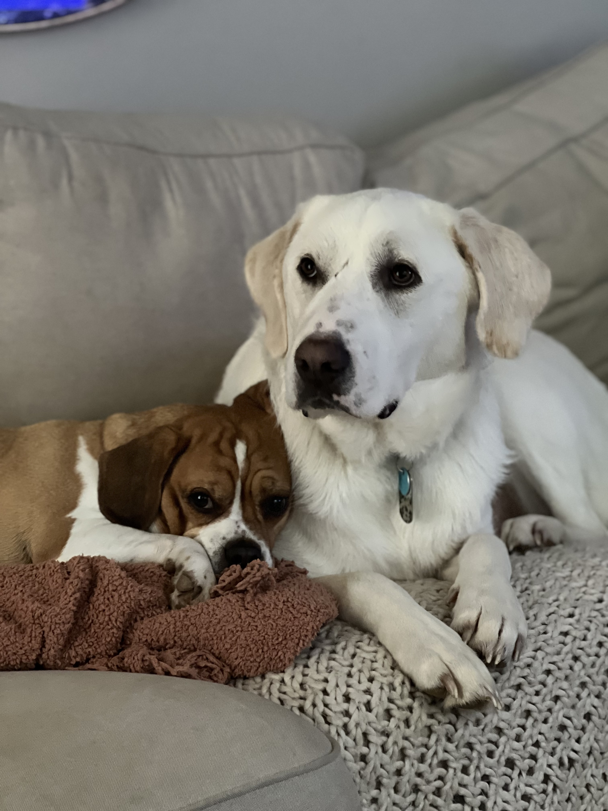

Odie and Aspen are wonderful dogs. Odie is a six year old puggle, part pug part beagle, while Aspen is a three year old Great pyrenees lab mix. The two of them have been brothers for nearly two years. Odie is from a couple who moved out of state and did not want to bring him. While Aspen is from a rescue shelter and was rescued days prior from a hoarding house. Both dogs compliment each other perfectly and love to get into trouble. They are sweet loving dogs who love to be the center of attention.
